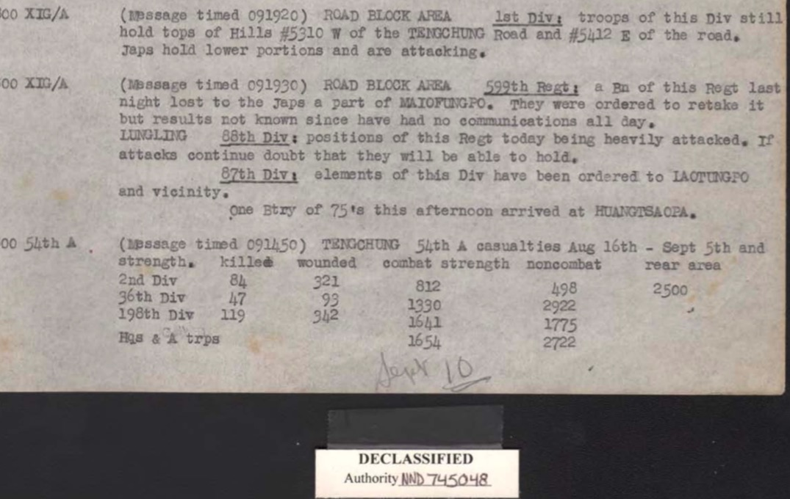
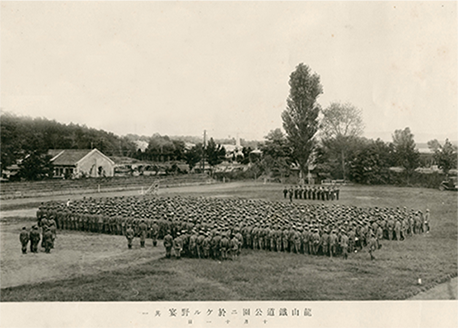
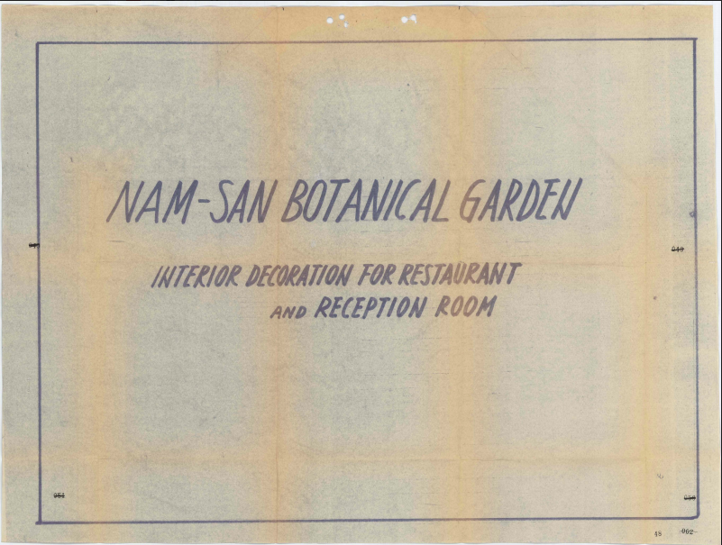
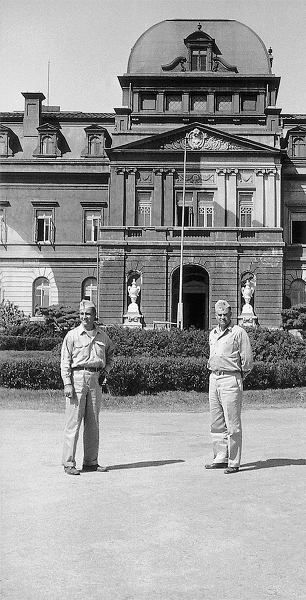

그룹/아이템
-  2017 미국(NARA) 문서 및 사진 자료(107) [조사일]2017.00.00 - 2017.00.00 NARA Ⅱ관에는 2차 세계대전 당시 미군이 생산하고 수집한 자료들이 체계적으로 수집되어 있다. 국가안보나 개인정보보호 등을 이유로 접근이 제한된 자료들을 제외하면, 생산된 지 30년이 지나 비밀해제가 된 문서들은 국적에 관계없이 소정의 절차에 따라 원본 문서들을 직접 열람하고, 문서들을 사진으로 찍거나 스캔하는 것도 가능하다(다만 건물 밖으로 대출할 수는 없다). 서울대 인권센터 ‘위안부’ 기록물 관리사업팀(이하 사업팀)이 수집한 ‘위안부’ 관계 자료들도 모두 NARA Ⅱ관에서 수집한 것이다.
-  2017 미국(NARA) 동영상 자료(N) [조사일]2017.00.00 - 2017.00.00 NARA의 동영상 관리 체계는 문서 관리 체계에 비해 단순한다. 동영상 자료는 RG와 카테고리로만 구별되며, 그 이후에는 순차적으로 번호를 부여하여 관리하고 있다.신원 확인이 용이하지 않은 영상의 특성을 고려하고, ‘위안부’의 이동 및 낙오에 대한 추가자료일 가능성 등을 고려하여 영상 제목과 캡션을 근거로 영상들의 내용을 확인했다. 동영상 자료 해제 워드 파일은 각 동영상을 실제로 재생하여 확인한 내용들이다.
-  2017년 영국(TNA) 자료(45) [조사일]2017.00.00 - 2017.00.00 영국은 2차 세계 대전에 연합군의 일환으로 참전하면서 주로 동남아시아 전구에서 주로 활동했다. 미군으로부터 정보 보고서들을 공람받기도 하였고, 영국군이 주력이 되어 적군인 일본군의 암호를 해독하거나, 일본군을 심문하여 얻은 ‘위안부’ 관련 정보 보고서들을 다수 생산하기도 했다. 특히 종전 이후 동남아시아에 있던 조선인들의 귀환에 대한 책임을 맡으면서 종전 이후 해당 지역에 남아 있던 ‘위안부’들의 현황에 대한 보고서를 생산하기도 하였다.
-  2017년 태국 조사 및 번역 내용 [조사일]2017.00.00 - 2017.00.00 태국의 국가 기록 보관소(National Archives of Thailand)에 보관된 태국 최고 사령부 본부 문서(Thai Supreme Command Headquarters Document)의 이전 위안소(comfort station)에 대한 상세한 정보와 2차 세계 대전을 경험한 지역 주민들이 서술한 정보에 중점을 둔다. 일본의 ‘위대한 동맹국’인 태국은 20만명이 넘는 일본 병사들의 주둔지였다. 다양한 일 본군 부대가 전국에 배치되었다. 태국 최고 사령부 본부 문서에 따르면 일본 군대는 다음과 같은 행정구역에 주재하였다.
수집과정
2015년 12월 28일 한일 ‘위안부’ 합의 이후 일본군 ‘위안부’ 문제를 진실과 정의 수립의 차원에서 해결하고자 하는 시민들의 관심과 노력이 국내외에서 고조되고 있음에도 불구하고, 한국의 ‘위안부’ 자료 수집 및 활용실태는 아직까지도 열악한 상황이다. 그간 ‘위안부’ 연구가 일본기관 및 개인들이 소장했던 자료에 크게 의존했던 한계를 벗어나기 위해서라도, 일본 외 국가 기관들이 생산하고 소장하고 있는 자료들에 주목하고, 이를 우리 관점에서 체계적으로 수집할 필요가 있다. 특히 2차 세계 대전 당시 상당한 일본 자료들을 노획․압수했고, ‘위안부’에 대한 첩보와 연구를 전후에도 지속했던 미국의 자료에 주목할 필요가 있다.